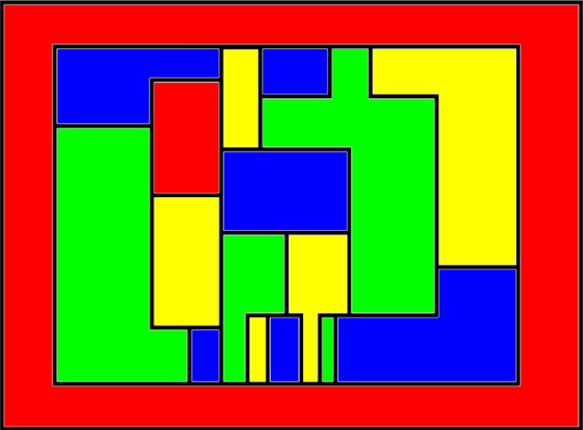

Teorema de los Cuatro Colores: 1976
El teorema de los cuatro colores implica que, con simplemente cuatro colores, podríamos colorear cada vértice de uno de ellos, y, conseguir que ninguno de ellos sea adyacente. Francis Guthrie lo dijo por primera vez en 1852, pero no se pudo comprobar hasta que los ordenadores estaban lo suficientemente avanzados como para poder comprobarlo mediante programas.
Volver a la página principal